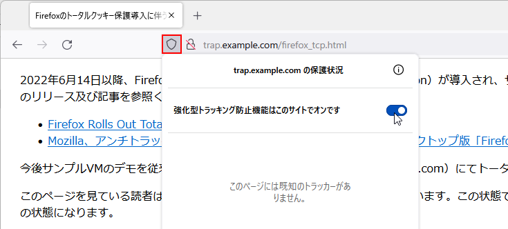
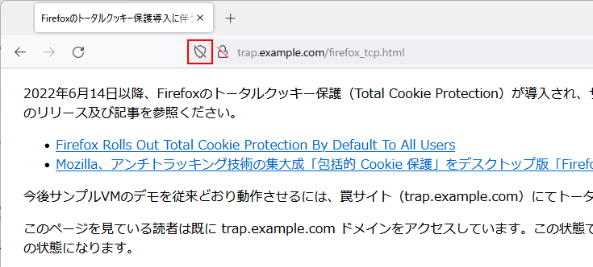

2022年6月14日以降、Firefoxのトータルクッキー保護（Total Cookie Protection）が導入され、サンプルVMのデモが一部動かなくなっています。トータルクッキー保護については以下のリリース及び記事を参照ください。
今後サンプルVMのデモを従来どおり動作させるには、罠サイト（trap.example.com）にてトータルクッキー保護を無効化することで可能です。
このページを見ている読者は既に trap.example.com ドメインをアクセスしています。この状態でアドレスバーの左端に「盾」のアイコンが表示されるのでそれをクリックします。下図の状態になります。
「強化型トラッキング防止機能はこのサイトでオンです」の横のスイッチをクリックして、オフに変更してください。下図のように盾アイコンに斜線が引かれた状態になるはずです。
この状態で特に危険になることはないはずですが、どうしても気になるようであれば、実習後に設定を戻しておくこともできます。
設定変更後は、必ずexample.jpにアクセスして実習を始めてください。